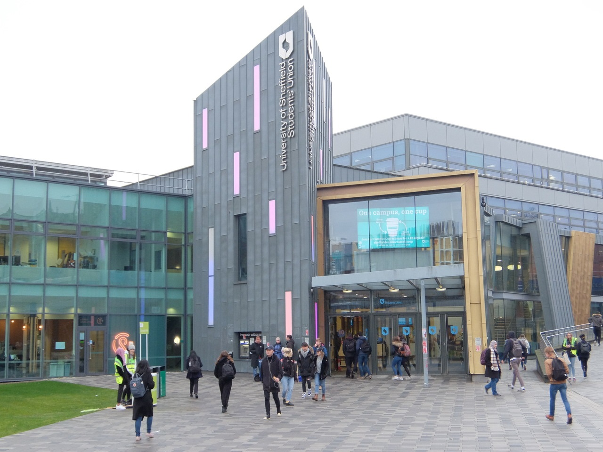

Maps
Address
Western Bank
Sheffield
S10 2AT
What's the best way to get here?
Although there is parking near to the Students' Union, due to it being close to Sheffield
town centre, the roads can get very busy throughout the day so it is recommended that you
travel by public transport to avoid this. The following buses stop at the Students' Union:
6 - Clarkson Street
51 - Glossop Road
51a - Glossop Road
52 - Glossop Road
52a - Glossop Road
120 - Clarkson Street
181 - Clarkson Street
271 - Clarkson Street
273 - Glossop Road
274 - Glossop Road
275 - Glossop Road
779 - Clarkson Street
781 - Clarkson Street
952 - Clarkson Street